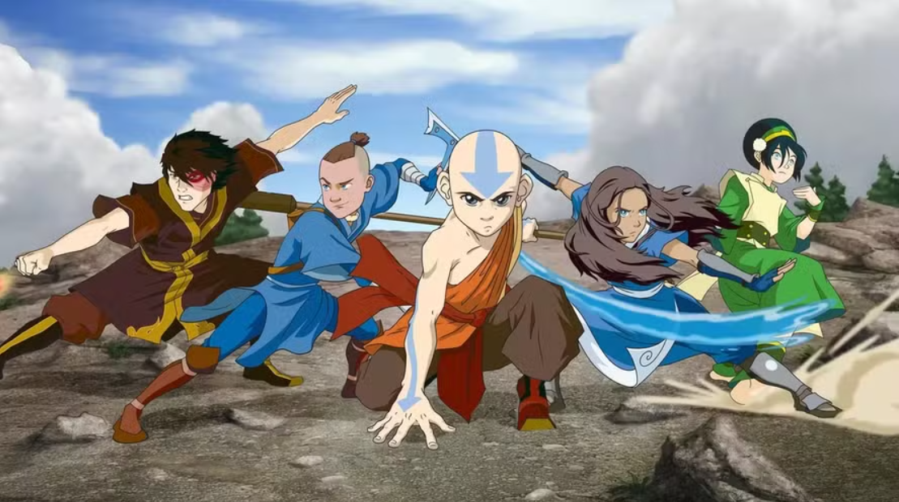

Avatar é uma série de dois cartoons, o primeiro contando sobre a vida de Aang, o último dobrador de ar que restou após uma grande guerra entre tribos de elementos, o qual é o avatar. O segundo contando sobre a vida de Korra, a sucessora dos poderes de Aand, que nasceu na tribo da água do norte.
"Dobrar" um elemento, é a capacidade de manipulá-lo de diferentes maneiras e, a seguir, falaremos sobre as quatro principais dobras desse universo
Essa é a dobra mais rara, após a extinção dos nômades do ar pela nação do fogo durante a guerra dos 100 anos.
Essa